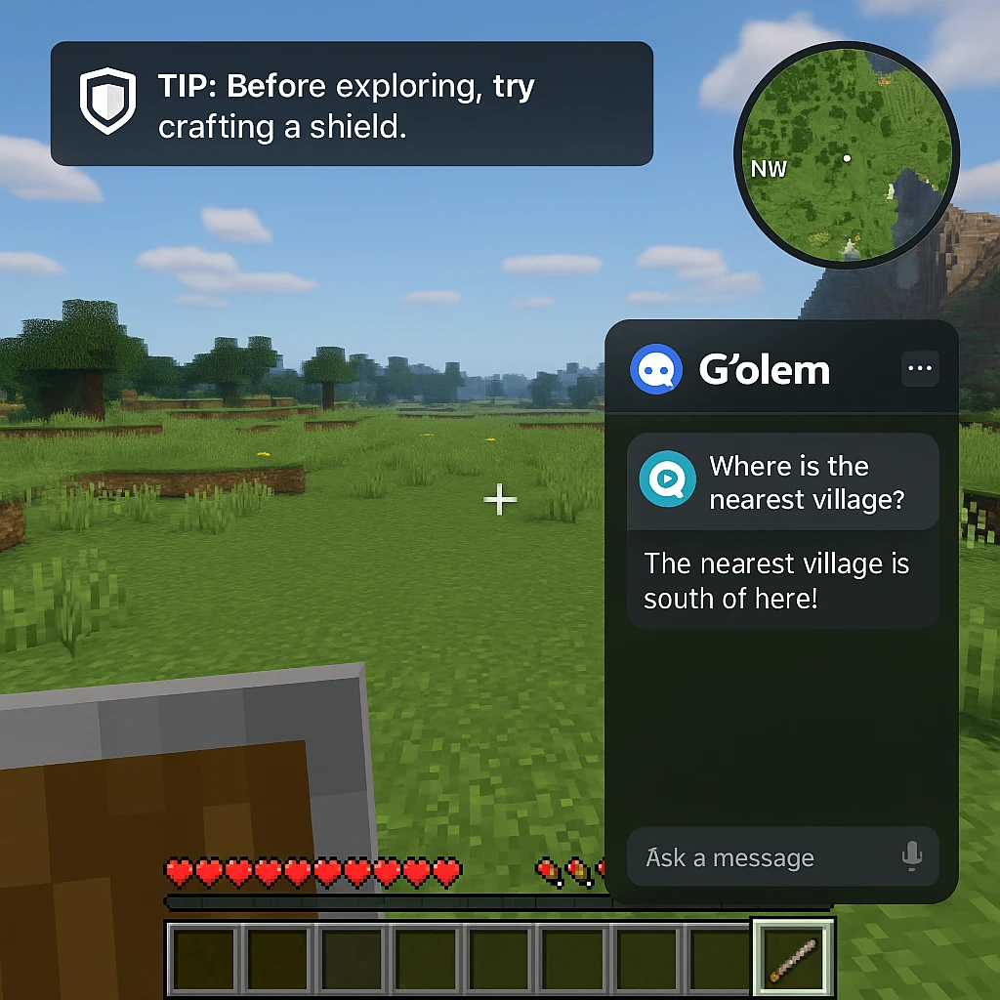
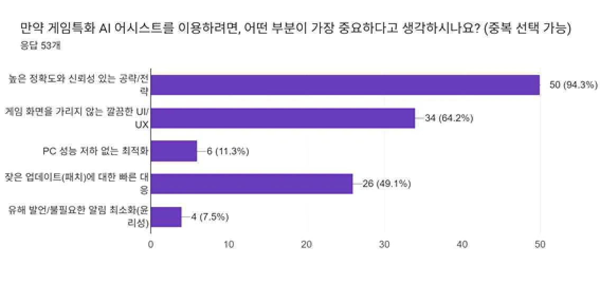
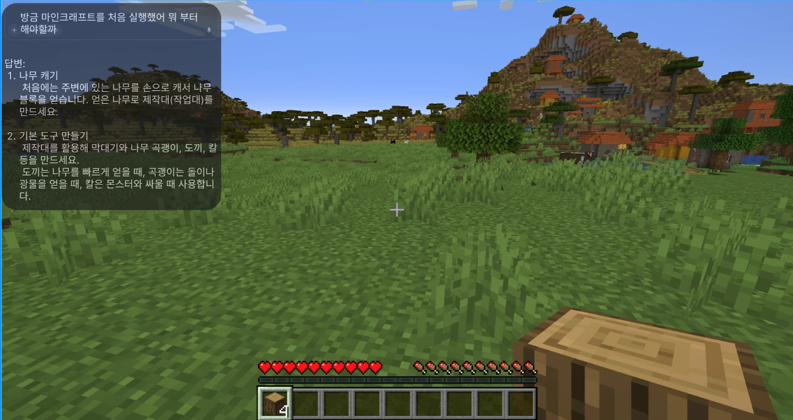
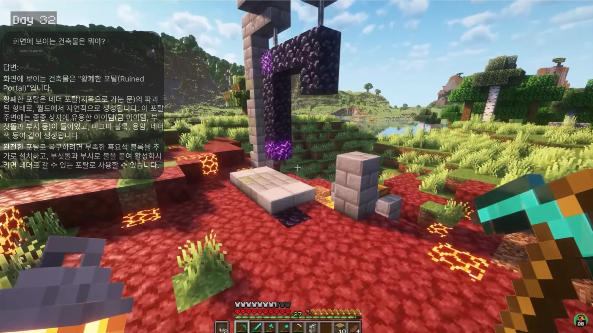
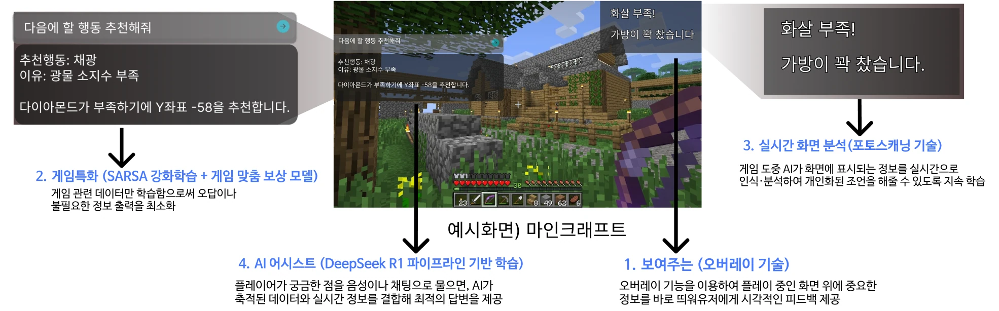
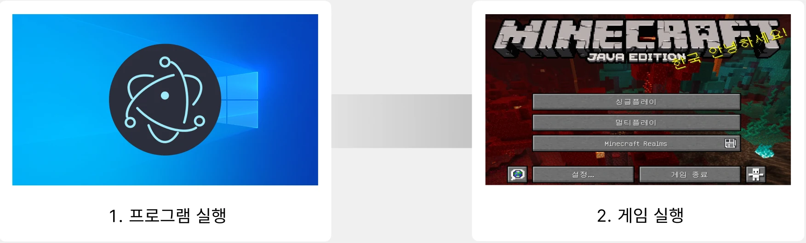
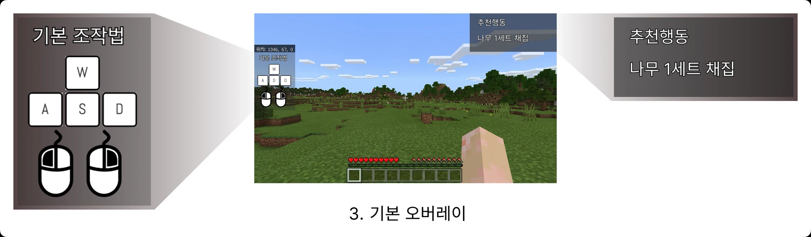
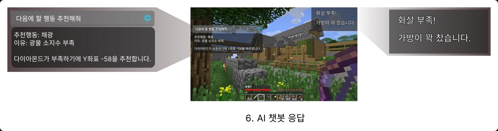
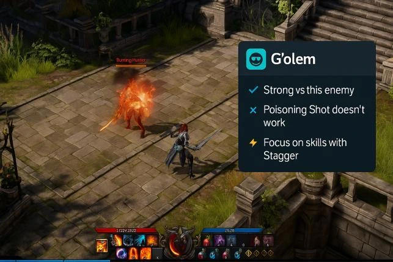

2025 · KeyMix 학생 창업 프로젝트
G’olem
AI 게임 어시스턴트
프로젝트 개요
마인크래프트에서 유튜브 영상을 따라 건축할 때, 블록 몇 개를 놓고 나면 다음 단계를 보려고 다시 유튜브로 돌아가곤 했습니다. 매번 화면을 바꾸다가 문득 ‘게임 안에서 필요한 정보를 바로 볼 수 있으면 어떨까?’ 하는 생각이 들었습니다. 그 경험에서 출발해 팀원들과 AI 게임 어시스턴트 G’olem을 기획했습니다.


공략을 찾는 동안 게임은 멈춘다
팀이 대학생 53명에게 게임 중 공략을 찾는 경험을 물었습니다. 49명이 정보를 찾으려고 창을 전환하는 일이 가끔 또는 매우 자주 불편하다고 답했습니다.
어시스턴트에서 중요한 점을 여러 개 고르는 문항에서는 50명이 믿을 만한 공략을, 34명이 게임 화면을 가리지 않는 UI를 선택했습니다. 팀장으로서 저는 두 가지를 함께 고려했습니다. 지금 보이는 상황에 맞게 답하되, 안내를 읽느라 플레이어가 보던 대상을 놓치지 않게 하는 것입니다.
설문 응답 그래프 보기


처음 그린 서비스 예상도
초기 기획에서는 질문을 두 장면으로 나눴습니다. 처음 시작한 사람은 행동의 순서가 필요하고, 탐험 중인 사람은 눈앞에 보이는 것의 이름과 쓰임이 궁금합니다.




질문과 알림의 자리를 나누다
다음 행동을 물으면 왼쪽 대화칸에서 보유 자원과 추천 이유를 함께 읽고, 화살이 떨어지거나 가방이 차면 오른쪽에서 짧은 알림만 보도록 구상했습니다. 조작법과 안내창의 위치도 각자 편한 곳으로 옮길 수 있게 기획했습니다.


실행부터 답변까지 화면 흐름 보기







장르별로 달라지는 힌트
세 장면에서 플레이어가 내려야 할 판단을 다르게 잡았습니다. 체스에서는 다음 수를 생각할 단서를 남기고, 이동과 전투가 급한 게임에서는 곧바로 시도할 행동을 짧게 보여 주려 했습니다.



창업 준비 결과
- 베타 모집 준비
- 서비스 소개 페이지와 관심 장르를 받는 사전 신청 폼, 이용자가 팁과 피드백을 나눌 게시판 제작
- 대회 입상
- 교내 창업아이디어 대회 입상
- 지원사업 선정
- 학생창업유망팀 300(U300) 선정
교내 창업지원 프로그램 선정 · 지원금과 사무 공간 확보
게임을 만드는 현장을 배우고 싶어진 계기
시안을 만들면서 한 가지 질문이 남았습니다. 길을 잃은 사람에게는 반가운 힌트가, 스스로 길을 찾고 싶은 사람에게는 오히려 방해가 되지 않을까? 실제로 플레이하는 사람을 이해해야 답할 수 있는 질문이었습니다.
그 질문 앞에서 기획자로서 제 경험의 한계를 느꼈습니다. 게임을 만드는 사람들이 플레이를 어떻게 관찰하고, 무엇을 근거로 기능을 바꾸는지 현장에서 직접 배우고 싶어졌습니다.